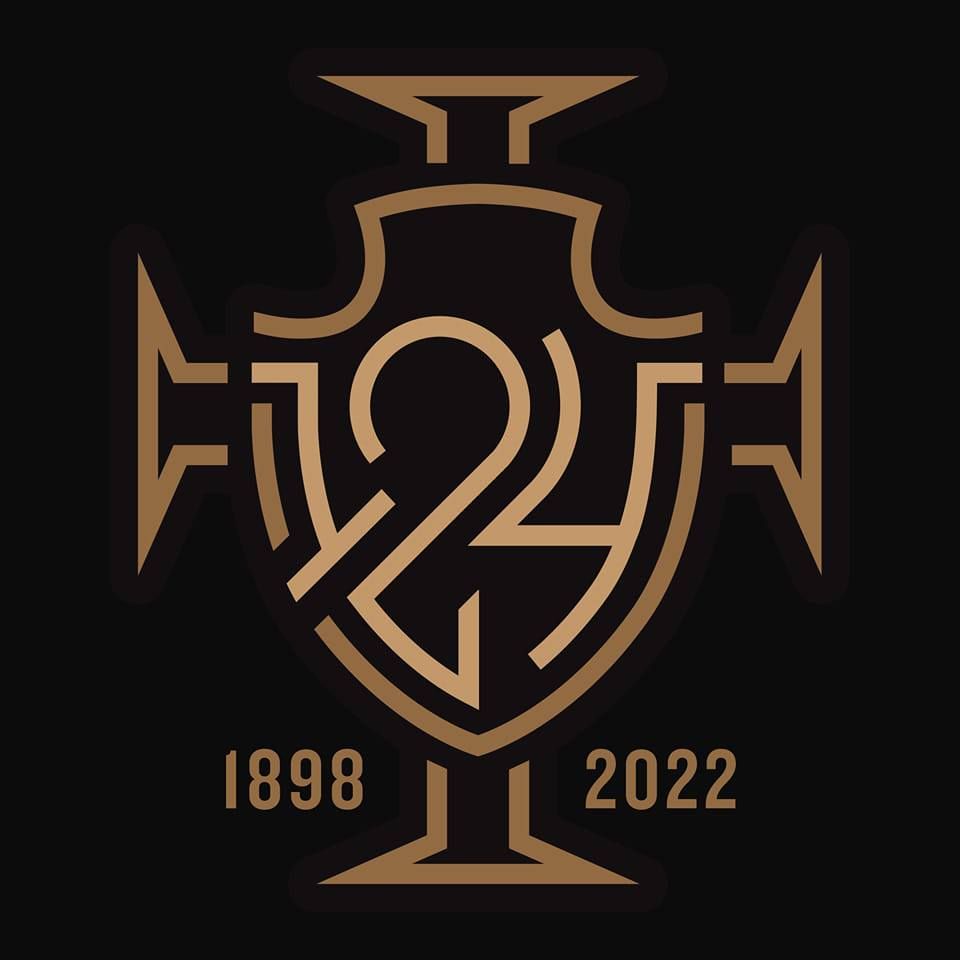

Perguntar sobre o VASCO
Fundado em 1898, sob nome de Club de Regatas Vasco da Gama, a instituição surgiu como praticante do remo. Por lá, a bola só começou a rolar em 1916, por influência de Raul Campos. Assim como os demais portugueses que vinham ao Brasil na época, ele chegou com o objetivo de ingressar no clube carioca.
O primeiro time de futebol vascaíno surgiu sob descontentamento dos praticantes de remo. Depois de um início com resultados complicados, a agremiação começou a procurar jogadores em ligas periféricas, independente de cor ou condição social. Encontrou e entrou para a Liga Metropolitana de Desportos Terrestres (LMDT), que organizava o Campeonato Carioca da época, com uma equipe formada, em maioria, por negros e pobres
Pouco tempo depois, em 1922, o Vasco é campeão da Série B do Estadual e conquista o acesso à elite no ano seguinte. Comandado pelo uruguaio Ramón Platero, o time venceu 11 jogos, empatou dois e perdeu apenas um. A excelente campanha levou ao título da primeira divisão. Recém-campeã da elite carioca, a equipe, que começou a ser montada em 1919, sofreu obstáculos para continuar. A Liga impôs uma regra que proibia analfabetos de atuarem no campeonato. Com ajuda do associado e bibliotecário da instituição portuguesa, Custódio Moura, os atletas conseguiram aprender a ler e escrever os dados necessários para seguirem jogando. Um ano depois de levantar o troféu, o clube se viu em mais uma situação complicada: os rivais se reuniram para fundar a Associação Metropolitana de Esportes Athleticos (AMEA). Por ser o atual campeão, o Vasco foi convidado, mas com uma restrição: deveria excluir 12 de seus jogadores do elenco - negros e pertencentes das camadas populares - por não terem “condições sociais apropriadas para o convívio esportivo”. No dia 7 de abril, José Augusto Prestes, presidente à época, redigiu e assinou a “Resposta Histórica”, que abria mão de fazer parte da AMEA e priorizava a manutenção dos desportistas.

- 